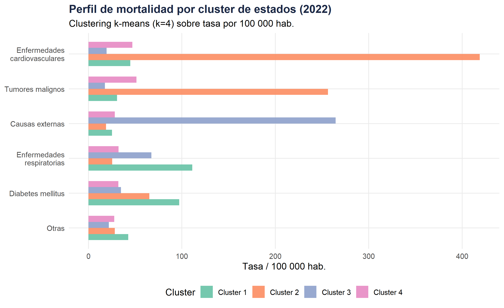
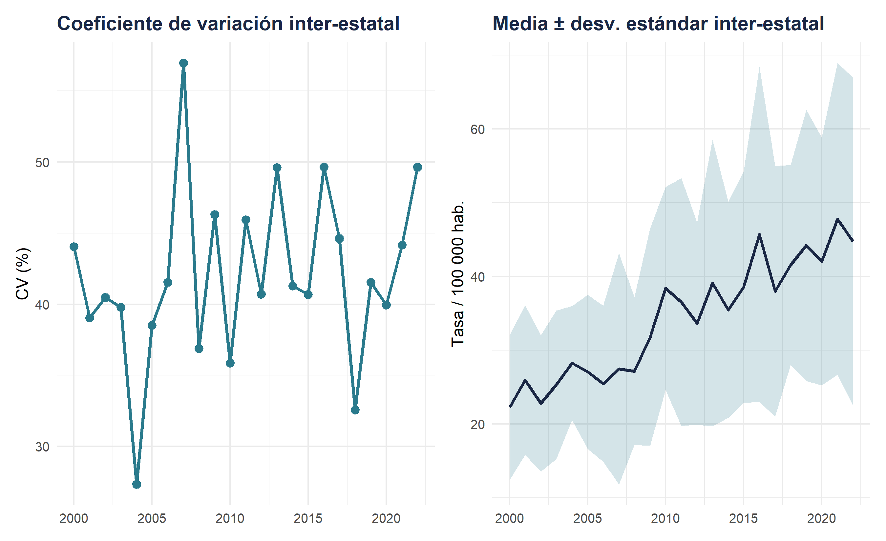

Bloque B — Distribución espacial, gradientes regionales y clusters, 2000–2022
Fecha de publicación
abril 2026
Bloque B · Nivel 2 bisVariables : state · year · cause
Introducción analítica
Este módulo constituye el primer nivel de la rama espacial del análisis. A diferencia del Bloque A —que progresa temporalmente—, aquí el espacio es la variable organizadora principal.
El análisis por entidades federativas permite :
Identificar gradientes norte-sur, costa-interior en la mortalidad
Detectar clusters espaciales (estados con perfiles similares)
Examinar si las disparidades regionales se han atenuado o ampliado en el tiempo
Tip
Articulación con el Bloque A
El Nivel ④ del Bloque A introduce el estado como variable de desagregación dentro de la lógica sanitaria. Aquí, la perspectiva se invierte : el territorio es el punto de partida, no la causa.
# ── Note : remplacer mx_grid par mx_states (shp réel) ───────────────tm_shape(mx_grid)+tm_polygons( col ="mean_rate", title ="Taux / 100 000 hab.", palette ="Blues", style ="quantile", n =5, border.col ="white", border.alpha =0.6, textNA ="Sin dato", colorNA ="#f0f0f0")+tm_text("state", size =0.45, col ="grey20")+tm_layout( main.title ="Tasa de mortalidad por Estado", main.title.size =1, legend.outside =TRUE, frame =FALSE, bg.color ="white")+tm_compass(position =c("right", "bottom"))+tm_scale_bar(position =c("left", "bottom"))
Taux de mortalité moyen par état (toutes causes, 2000–2022)
Código
# Cause dominante par étatcause_dominante<-mort_state_cause_last|>group_by(state)|>slice_max(rate_100k, n =1)|>ungroup()mx_cause<-mx_grid|>left_join(cause_dominante, by ="state")|>mutate(cause_short =case_when(cause=="Enfermedades cardiovasculares"~"Cardiovascular",cause=="Diabetes mellitus"~"Diabetes",cause=="Tumores malignos"~"Cáncer",cause=="Causas externas"~"Ext.",TRUE~"Otras"))tm_shape(mx_cause)+tm_polygons( col ="cause_short", title ="Causa principal", palette ="Set2", border.col ="white", border.alpha =0.6)+tm_layout( main.title ="Causa principal de mortalidad por Estado (2022)", main.title.size =1, legend.outside =TRUE, frame =FALSE)
Cause principale de mortalité par état (2022)
Código
# Résumé par état × année sélectionnéerate_comp<-mort_state|>filter(year%in%c(2000, 2022))|>group_by(state, year)|>summarise(rate_100k =mean(rate_100k), .groups ="drop")rate_wide<-rate_comp|>pivot_wider(names_from =year, values_from =rate_100k, names_prefix ="rate_")|>mutate(delta =rate_2022-rate_2000)mx_delta<-mx_grid|>left_join(rate_wide, by ="state")tm_shape(mx_delta)+tm_polygons( col ="delta", title ="Δ taux (2022 − 2000)", palette ="RdBu", midpoint =0, style ="quantile", border.col ="white", border.alpha =0.6)+tm_layout( main.title ="Cambio en la tasa de mortalidad (2022 vs 2000)", main.title.size =1, legend.outside =TRUE, frame =FALSE)
Évolution du taux de mortalité entre 2000 et 2022
2 · Analyse des gradients régionaux
Código
mort_state|>filter(year==2022, cause=="Enfermedades cardiovasculares")|>group_by(state, lat_rank)|>summarise(rate_100k =mean(rate_100k), .groups ="drop")|>ggplot(aes(x =lat_rank, y =rate_100k))+geom_point(color ="#1a2744", size =3, alpha =0.8)+geom_smooth(method ="loess", se =TRUE, color ="#2a7a8c", fill ="#2a7a8c", alpha =0.2)+geom_text(aes(label =state), size =2.8, nudge_y =3, color ="#6c757d", check_overlap =TRUE)+labs( title ="Gradiente norte-sur : enfermedades cardiovasculares (2022)", subtitle ="Eje X = posición relativa norte-sur (proxy de latitud)", x ="Posición relativa (sur → norte)", y ="Tasa de mortalidad / 100 000 hab.")+theme_minimal(base_size =13)+theme( plot.title =element_text(face ="bold", color ="#1a2744"), plot.subtitle =element_text(color ="#6c757d"))
Figura 1: Gradient du taux de mortalité selon la latitude (proxy)
3 · Typologies régionales (clustering)
Código
# ── Clustering k-means sur profil causal ─────────────────────────────# (en production : ajouter standardisation + Moran's I pour autocorrélation)# Matrice état × cause (taux 2022)mat_cluster<-mort_state_cause_last|>select(state, cause, rate_100k)|>pivot_wider(names_from =cause, values_from =rate_100k, values_fill =0)|>column_to_rownames("state")|>scale()set.seed(123)k<-4# nombre de clusters (choisir via silhouette en pratique)km<-kmeans(mat_cluster, centers =k, nstart =25)clusters_df<-tibble( state =rownames(mat_cluster), cluster =factor(km$cluster, labels =paste0("Cluster ", 1:k)))# Profils des clustersmort_state_cause_last|>left_join(clusters_df, by ="state")|>group_by(cluster, cause)|>summarise(rate_100k =mean(rate_100k), .groups ="drop")|>mutate(cause =str_wrap(cause, 20))|>ggplot(aes(x =reorder(cause, rate_100k), y =rate_100k, fill =cluster))+geom_col(position ="dodge", width =0.7, alpha =0.9)+coord_flip()+scale_fill_brewer(palette ="Set2")+labs( title ="Perfil de mortalidad por cluster de estados (2022)", subtitle ="Clustering k-means (k=4) sobre tasa por 100 000 hab.", x =NULL, y ="Tasa / 100 000 hab.", fill ="Cluster")+theme_minimal(base_size =12)+theme( legend.position ="bottom", plot.title =element_text(face ="bold", color ="#1a2744"), panel.grid.minor =element_blank())

Profil de mortalité par cluster d’états
Código
# Tableau des états par clusterclusters_df|>left_join(mort_state_total, by ="state")|>arrange(cluster, desc(mean_rate))|>select(Cluster =cluster, Estado =state, `Tasa media` =mean_rate)|>mutate(`Tasa media` =round(`Tasa media`, 1))|>kable(caption ="Asignación de estados por cluster de mortalidad")|>kable_styling(bootstrap_options =c("striped", "hover", "condensed"), full_width =FALSE)|>pack_rows(index =table(clusters_df$cluster))
Asignación de estados por cluster de mortalidad
Cluster
Estado
Tasa media
Cluster 1
Cluster 1
Nuevo León
34.7
Cluster 1
Guanajuato
34.3
Cluster 1
San Luis Potosí
33.7
Cluster 1
Yucatán
32.9
Cluster 1
Zacatecas
31.9
Cluster 1
Oaxaca
28.9
Cluster 2
Cluster 2
Campeche
39.6
Cluster 3
Cluster 3
Aguascalientes
32.7
Cluster 4
Cluster 4
Nayarit
40.4
Cluster 4
Sinaloa
39.9
Cluster 4
México
39.3
Cluster 4
Tabasco
37.3
Cluster 4
Baja California
37.2
Cluster 4
Hidalgo
37.1
Cluster 4
Coahuila
37.0
Cluster 4
Chiapas
36.4
Cluster 4
Colima
36.3
Cluster 4
Puebla
36.2
Cluster 4
Ciudad de México
35.9
Cluster 4
Tlaxcala
35.2
Cluster 4
Querétaro
35.1
Cluster 4
Guerrero
35.0
Cluster 4
Durango
34.4
Cluster 4
Chihuahua
34.3
Cluster 4
Veracruz
32.6
Cluster 4
Quintana Roo
32.4
Cluster 4
Jalisco
30.8
Cluster 4
Michoacán
30.7
Cluster 4
Morelos
30.4
Cluster 4
Tamaulipas
29.5
Cluster 4
Baja California Sur
28.5
Cluster 4
Sonora
27.9
4 · Indicateurs de dispersion spatiale
Código
# Coefficient de variation inter-étatique par annéecv_by_year<-mort_state|>group_by(year, state)|>summarise(rate_100k =mean(rate_100k), .groups ="drop")|>group_by(year)|>summarise( mean_rate =mean(rate_100k), sd_rate =sd(rate_100k), cv =sd_rate/mean_rate*100, range_ =max(rate_100k)-min(rate_100k))p1<-ggplot(cv_by_year, aes(x =year, y =cv))+geom_line(color ="#2a7a8c", linewidth =1.1)+geom_point(size =2.5, color ="#2a7a8c")+labs(title ="Coeficiente de variación inter-estatal", x =NULL, y ="CV (%)")+theme_minimal(base_size =12)+theme(plot.title =element_text(face ="bold", color ="#1a2744"))p2<-ggplot(cv_by_year, aes(x =year, y =range_))+geom_ribbon(aes(ymin =mean_rate-sd_rate, ymax =mean_rate+sd_rate), fill ="#2a7a8c", alpha =0.2)+geom_line(aes(y =mean_rate), color ="#1a2744", linewidth =1.1)+labs(title ="Media ± desv. estándar inter-estatal", x =NULL, y ="Tasa / 100 000 hab.")+theme_minimal(base_size =12)+theme(plot.title =element_text(face ="bold", color ="#1a2744"))# patchwork : côte à côtelibrary(patchwork)p1|p2

Évolution de la dispersion inter-étatique de la mortalité
Nota
Note méthodologique — Autocorrélation spatiale
En production, il est recommandé de calculer l’indice de Moran (via spdep) pour tester l’autocorrélation spatiale des taux de mortalité. Un I de Moran significatif et positif confirmerait l’existence de clusters spatiaux.